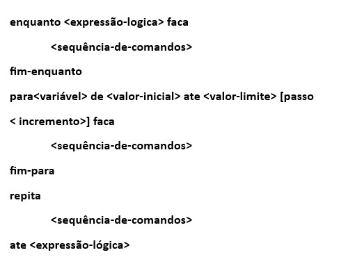
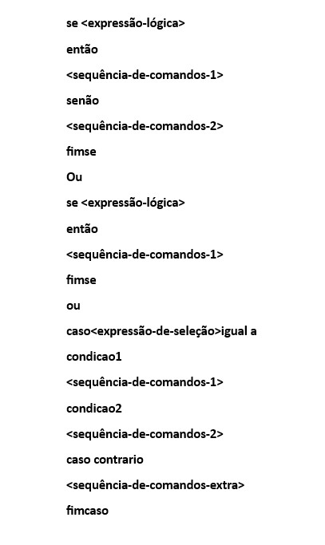

SINTAXE
Tipos de Dados
Os dados manipulados por um algoritmo podem possuir natureza distinta, isto é, podem
ser números, letras, frases, etc. Dependendo da natureza de um dado, algumas operações
podem ou não fazer sentido quando aplicadas a eles. Por exemplo, não faz sentido falar em
somar duas letras. Para poder distinguir dados de naturezas distintas e saber quais operações
podem ser realizadas com eles, os algoritmos utilizam o conceito de tipo de dados.
O tipo de um dado define o conjunto de valores ao qual o dado pertence, bem como o
conjunto de todas as operações que podem atuar sobre qualquer valor daquele conjunto de valores.
O Portugol prevê quatro tipos de dados: inteiro, real, caractere e lógico (ou booleano). As palavras-chave que os definem são as seguintes (observe que elas não têm acentuação):
• Inteiro: define variáveis numéricas do tipo inteiro, ou seja, sem casas decimais;
• Real: define variáveis numéricas do tipo real, ou seja, com casas decimais;
• Caractere: define variáveis do tipo caractere;
• Lógico: define variáveis do tipo booleano, ou seja, com valor VERDADEIRO ou FALSO.
Operadores Aritméticos
+, -, *, /, \ (divisão inteira), MOD(resto da divisão inteira) ^ (potenciação)
Operadores Relacionais
=, , <=,>=, <>
Operadores Lógicos
ou, nao, e, xou
Entrada de Dados
ler
Saída de Dados
mostrar
Estruturas de repetição

Estruturas de seleção
